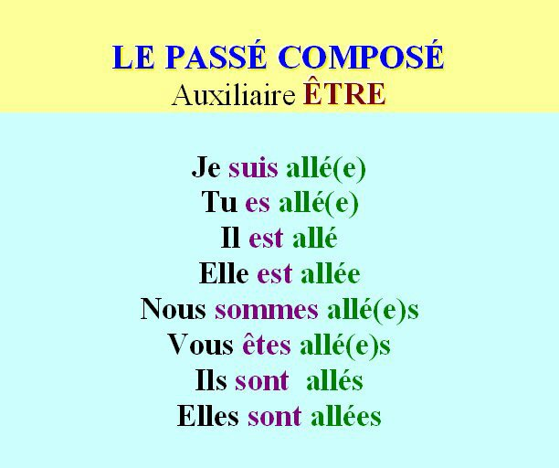

Czas passé composé to czas przeszły dokonany, używamy go kiedy mówimy o:
- czynności przeszłej dokonanej (która może mieć konsekwencje w teraźniejszości)
- czynności przeszłej, której czas trwania jest określony,
- o kilku czynnościach dokonanych, następujących po sobie.
Passé composé tworzymy :
avoir ou être au présent + participe passé
UWAGA! Na szczęście większość czasowników występuje z czasownikiem posiłkowym mieć, z czasownikiem
być występuje 14 czasowników plus wszystkie czasowniki zwrotne (te które bezokoliczniku mają se,
np.: se réveiller - budzić się, s'habiller - ubierać się, se coucher - kłaść się etc.).
Avoir i être są w tym wypadku nazywane les verbes auxiliaires czyli czasownikami posiłkowymi,
które odmieniamy w czasie teraźniejszym, i po których stawiamy participe passé - stałą formę
czasownika, która prawie nigdy się nie zmienia (zmienia się tylko wtedy, kiedy występuje z être,
znajdziecie to poniżej w punkcie III).
Passé composé najczęściej występuje po okolicznikach czasu (określenia czasowe), musi być zaznaczony
moment rozpoczęcia i zakończenia danego wydarzenia:
de 1990 à 1992, en 1999 - od 1990 do 1992, w 1999
hier - wczoraj
avant-hier - przedwczoraj
la semaine dernière - w zeszłym tygodniu
le mois dernier - w zeszłym miesiącu
l'année dernière - w zeszłym roku
pendant 10 ans - przez 10 lat
Użycie czasu passé composé
Passé composé wyraża:
czynność dokonaną, punktową
La bombe a explosé. - Bomba wybuchła.
kiedy kilka czynności dokonanych w przeszłości jest wymienionych po sobie; wprowadzane
takimi słówkami jak
après, puis, ensuite, alors, tout à coup, itp.
Je me suis réveillé à 8 heures, j’ai téléphoné à ma mère puis je suis allé au travail.
- Obudziłem się o 8, zadzwoniłem do matki i następnie pojechałem do pracy
gdy czas trwania czynności jest ograniczony i konkretny; wyrażony najczęściej okolicznikami
czasu jak np. hier, avant-hier, l’année dernière, itp.
Il a acheté sa première maison le 12 mai 1975. - Kupił swój pierwszy dom 12 maja 1975 r.
W poprzednim miesiącu sprzedaliśmy 5 samochodów. - Le mois dernier nous avons vendu 5 voitures.
powtórzenie czynności
J’ai écouté cette chanson cent fois. - Słuchałem tej piosenki 100 razy.
fakt dokonany w przeszłości bliskiej lub dalekiej który może mieć skutek w teraźniejszości
Il a passé son bac il y a 5 ans. - Zdał maturę 5 lat temu.
Czasownik posiłkowy avoir czy être?
czasowniki avoir lub être w czasach złożonych nazywamy posiłkowymi (po francusku auxiliaires)
Zdecydowana większość czasowników tworzy czas passé composé z czasownikiem posiłkowym avoir,
np. parler, changer, dire, pouvoir, savoir, itd. Oprócz wyjątków podanych poniżej
Wszystkie czasowniki zwrotne, np. s’asseoir, s’appeler, se laver, itp. + czasowniki :
aller
arriver
entrer (rentrer)
partir (repartir)
rester
passer
retourner
tomber
venir (intervenir, parvenir, revenir, devenir)
décéder
naître
mourir
descendre
monter
sortir